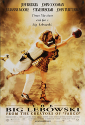
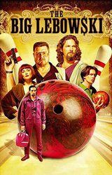
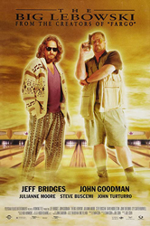
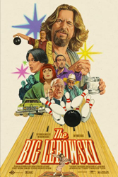

1998 - THE BIG LEBOWSKI |
||||
CAST |
||||
Jeffrey "The Dude" Lebowski |
- |
Jeff Bridges |
||
Treehorn's Thug 1 |
- |
Philip Moon |
||
Treehorn's Thug 2 |
- |
Mark Pellegrino | ||
Walter Sobchak |
- |
John Goodman |
||
Donny Kerabatsos |
- |
Steve Buscemi |
||
Smokey |
- |
Jimmie Dale Gilmore | ||
Jeffrey "The Big" Lebowski |
- |
David Huddleston |
||
Brandt |
- |
Philip Seymour Hoffman |
||
Bunny Lebowski |
- |
Tara Reid |
||
Marty, The Dude's landlord |
- |
Jack Kehler |
||
Jesus Quintana |
- |
John Turturro |
||
Cop 1 |
- |
Richard Gant | ||
Cop 2 |
- |
Christian Clemenson | ||
Maude Lebowski |
- |
Julianne Moore |
||
Sherry, Porn Actress |
- |
Asia Carrera | ||
Tony, the chauffeur |
- |
Dom Irrera | ||
Nihilist Uli Kunkel / Karl Hungus |
- |
Peter Stormare |
||
Nihilist Franz |
- |
Torsten Voges |
||
Nihilist Kieffer |
- |
Flea | ||
The Stranger |
- |
Sam Elliott |
||
Knox Harrington |
- |
David Thewlis |
||
Doctor |
- |
Marshall Manesh |
||
Pilar |
- |
Irene Olga López | ||
Arthur Digby Sellers |
- |
Harry Bugin |
||
Larry Sellers |
- |
Jesse Flanagan | ||
Corvette Owner |
- |
Luis Colina | ||
Jackie Treehorn |
- |
Ben Gazzara |
||
Malibu Police Chief |
- |
Leon Russom |
||
Da Fino |
- |
Jon Polito |
||
Franz's Girlfriend |
- |
Aimee Mann |
||
Francis Donnelly, Funeral Director |
- |
Warren Keith | ||
|
||||
Cinematographer |
- |
Roger Deakins |
||
Production Designer |
- |
Rick Heinrichs | ||
Costume Designer |
- |
Richard Hornung | ||
Music |
- |
Carter Burwell | ||
PLOT |
||||
When the "Dude" Lebowski is mistaken for a millionaire Lebowski, two thugs urinate on his rug to coerce him into paying a debt he knows nothing about. While attempting to gain recompense for the ruined rug from his wealthy counterpart, he accepts a one-time job with high pay-off. He enlists the help of his bowling buddy, Walter, a gun-toting Jewish-convert with anger issues. Deception leads to more trouble, and it soon seems that everyone from porn empire tycoons to nihilists want something from the "Dude". |
||||
BACKGROUND |
||||
The "Dude" was mostly inspired by Jeff Dowd, an American film producer and political activist the Coen brothers met while they were trying to find distribution for their first feature, Blood Simple. Dowd had been a member of the Seattle Seven, liked to drink White Russians and was known as "The Dude". According to Julianne Moore, the character of Maude was based on artist Carolee Schneemann, "who worked naked from a swing", and on Yoko Ono. The character of Jesus Quintana was inspired in part by a performance the Coens had seen John Turturro give in 1988 at the Public Theater in a play called Mi Puta Vida in which he played a pederast-type character. For the film's look, the Coens wanted to avoid the usual retro 1960's clichés like lava lamps, Day-Glo posters and Grateful Dead music and for it to be "consistent with the whole bowling thing, we wanted to keep the movie pretty bright and poppy", Joel said in an interview. For example, the star motif, featured predominantly throughout the film, started with the film's production designer Richard Heinrichs' design for the bowling alley. This carried over to the film's dream sequences. "Both dream sequences involve star patterns and are about lines radiating to a point. In the first dream sequence, the Dude gets knocked out and you see stars and they all coalesce into the overhead nightscape of L.A. The second dream sequence is an astral environment with a backdrop of stars", remembers Heinrichs. For Jackie Treehorn's Malibu beach house, he was inspired by late 1950's and early 1960's bachelor pad furniture. The Coens told Heinrichs that they wanted Treehorn's beach party to be Inca-themed, with a "very Hollywood-looking party in which young, oiled-down, fairly aggressive men walk around with appetizers and drinks. So there's a very sacrificial quality to it." |
||||
    |
||||